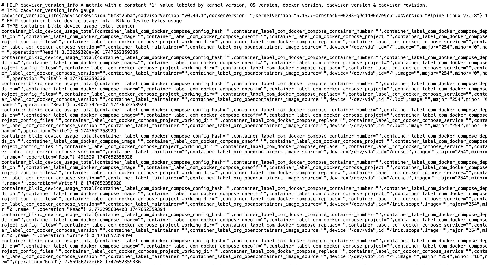
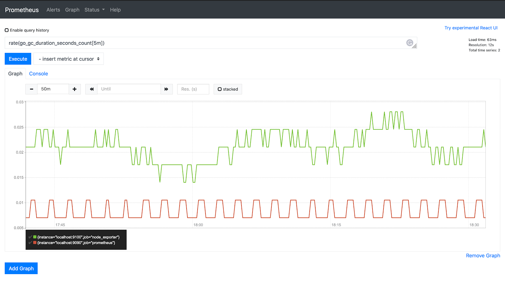
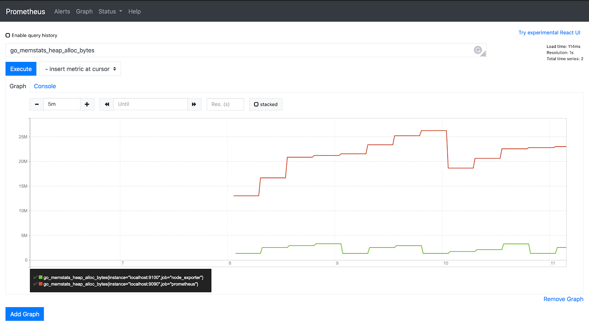
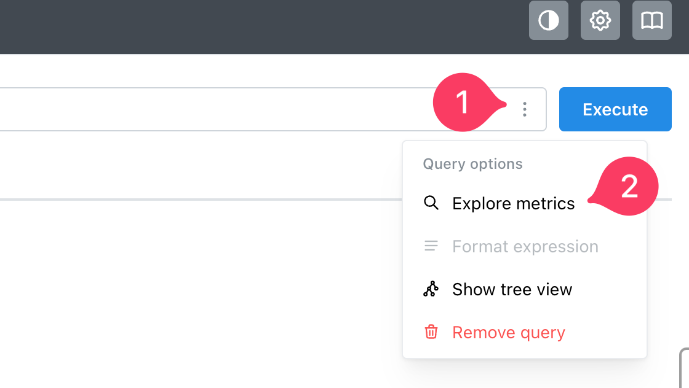
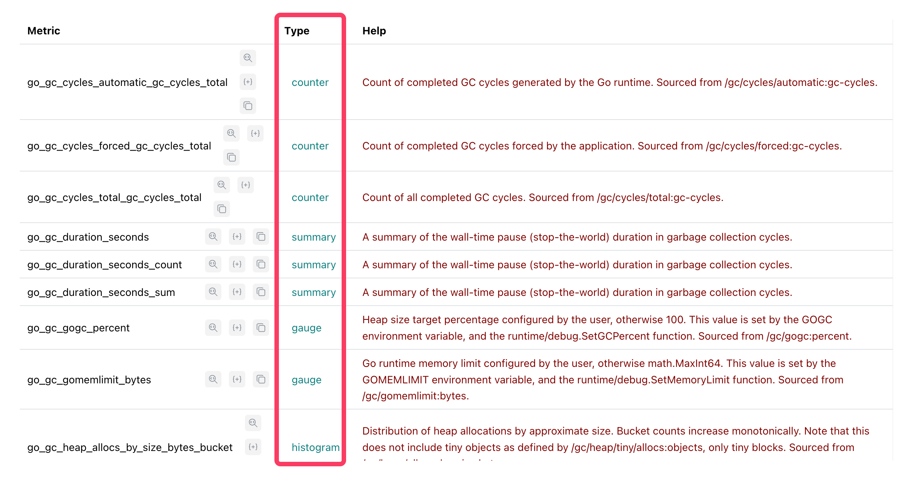

Prometheus
https://prometheus.io/
¿Qué es prometheus?
RESUMEN Prometheus es un sistema de monitoreo y alerta de código abierto que recopila y almacena métricas de aplicaciones e infraestructuras. Es una base de datos de series temporales que permite monitorizar el estado de los sistemas, detectar problemas y alertar cuando ocurren.
FUNCIONAMIENTO Prometheus va recorriendo "escrapeando" diferentes sistemas que le indiquemos los datos de métricas a través de una API y los almacena. Con prometheus podemos consultar estas métricas.
Recopilación de métricas:
Prometheus utiliza un modelo de extracción (pull) para recopilar métricas de los sistemas que supervisa. Esto significa que el servidor de Prometheus solicita periódicamente métricas a los objetivos (aplicaciones, servidores, etc.).
Almacenamiento de series temporales:
Las métricas recopiladas se almacenan en una base de datos de series temporales, lo que permite analizar los datos a lo largo del tiempo.
Lenguaje de consulta (PromQL):
Prometheus ofrece un lenguaje de consulta (PromQL) para consultar las métricas almacenadas, lo que permite crear gráficos, alertas y análisis ad hoc.
Alertas:
Prometheus incluye un sistema de alertas que permite configurar reglas para alertar cuando se detectan problemas o cambios en las métricas.
Componentes
Prometheus está compuesto por varios componentes, incluyendo:
- Servidor Prometheus: El componente central que almacena las métricas y proporciona la API de consulta.
- Exportadores: Agentes de software que recopilan métricas de diferentes sistemas y las exponen en un formato compatible con Prometheus.
- Alertmanager: Un servicio que gestiona las alertas y las notifica a los usuarios.
- Pushgateway: Un componente que permite a los servicios enviar métricas a Prometheus sin tener que implementar el modelo de extracción.
Uso
Prometheus se utiliza ampliamente en entornos de desarrollo, operaciones y DevOps para monitorizar la salud de los sistemas, detectar problemas de rendimiento, predecir fallas y mejorar la eficiencia.
Hay todo un ecosistema de bibliotecas y clientes para exportar métricas compatibles con Prometheus desde multitud de sistemas.
https://prometheus.io/docs/instrumenting/clientlibs/
Métricas
Ejemplo de métricas a las que accede prometheus.
nombre_etiqueta{LABELS}

Tipos de métricas
https://prometheus.io/docs/tutorials/understanding_metric_types/
Contador
Es un valor métrico que solo puede aumentar o restablecerse, es decir, el valor no puede ir a menos. Se puede utilizar para métricas como el número de solicitudes, número de errores, etc.
Escribe la consulta a continuación en la barra de consultas y haga clic en ejecutar.
go_gc_duration_seconds_count
La función rate() en PromQL toma el historial de métricas durante un período de tiempo y calcula qué tan rápido aumenta el valor por segundo. La tasa es aplicable solo en valores de contador.
rate(go_gc_duration_seconds_count[5m])

Gauge (indicador)
Es un número que puede subir o bajar. Se puede usar para métricas como el número de eventos en una cola, etc.
go_memstats_heap_alloc_bytes

Funciones promQL como max_over_time, min_over_time y avg_over_time se puede utilizar en métricas de gauge.
Histograma
Se utilizan para ver distribuciones estadísticas.
Summary
Resúmenes, funcionan como los histogramas pero solamente te dan el valor total.
Por ejemplo, nos pueden dar la mediana o máximo o mínimo de por ejemplo el uso de la CPU.
Ejemplos
Clonamos el siguiente repositorio para los ejemplos:
https://github.com/josepgarcia/monitoring-prometheus-graphana
Ejemplo 1. Instalación básica.
Abre y analiza los archivos:
docker-compose.yamly prometheus.yml
Levanta el contenedor con:
docker compose up
Accede a prometheus
http://localhost:9090/
Las métricas que encontramos son las del propio prometheus:
http://localhost:9090/metrics
Vemos las métricas que tenemos disponibles.

Encontramos diferentes tipos de métricas:

Ejemplos de consultas que podemos realizar:
Intervalos entre los diferentes "scrapeos"
prometheus_target_interval_length_seconds
Si estamos interesados en las de 0.99, las podemos filtrar con:
prometheus_target_interval_length_seconds{quantile="0.99"}
En graph:
rate(prometheus_tsdb_head_chunks_created_total[1m])`
Ejemplo 2. cadvisor.
https://www.apptio.com/topics/kubernetes/devops-tools/cadvisor/
cAdvisor es un software de Google, escrito en Go, y programado específicamente para la captura de métricas de contenedores; necesita acceso a varios directorios del host (que mapearemos con bind-mounts en Docker) para capturar los datos. cAdvisor expone el puerto 8080 (interfaz web y REST api) y por defecto permite a Prometheus acceder a varias métricas.
cadvisor: http://localhost:8080/
cadvisor metrics: http://localhost:8080/metrics
Podemos consultar métricas como:
cadvisor_version_info
container_start_time_seconds{name="cadvisor"}
rate(container_cpu_usage_seconds_total{name="redis"}[1m]) |
The cgroup's CPU usage in the last minute | The redis container |
container_memory_usage_bytes{name="redis"} |
The cgroup's total memory usage (in bytes) | The redis container |
rate(container_network_transmit_bytes_total[1m]) |
Bytes transmitted over the network by the container per second in the last minute | All containers |
rate(container_network_receive_bytes_total[1m]) |
Bytes received over the network by the container per second in the last minute | All containers |
Ejemplo 3. graphana.
netdata
https://github.com/netdata/netdata
promQL
Enlaces
https://mxulises.medium.com/simple-prometheus-setup-on-docker-compose-f702d5f98579
https://comacero.com/posts/notes_docker_mon/
[^1]: